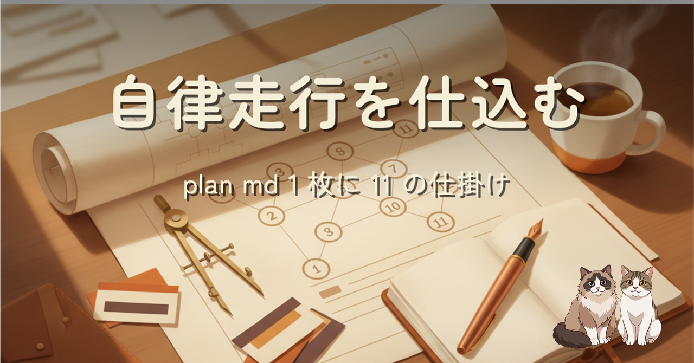

Claude Code の /goal に、自作アプリの実装を最後まで任せてみたい。走り出す前の plan md 1 枚に、実装 AI が離陸してから着陸まで必要な情報を全部積む。11 のセクション、案 B（半自律・停止条件 3 つ）、サブエージェント 3 本の並列走行。時間軸の 95% は自動、末尾の 5% だけ手動介入する形に整えた土曜の午後の記録です。
Claude Code の /goal を初めて使う前に、plan md 1 枚で AI エージェントが最後まで自律走行できるように何を仕込むかを考えた記録です。走行中の対話を減らすには、事前に「契約書」を厚くする必要があります。役割宣言、完成の定義、10 個の実装タスクとその受け入れ基準、非交渉事項、停止条件を 3 つに絞る割り切り、サブエージェント 3 本の並列 spawn 戦略。時間軸の 95% は自動で、末尾の 5% だけ手動介入する形に整えました。まだ走らせてはいませんが、動かなかったら plan md を書き換えて再チャレンジできる、それが 1 枚に集約している強みだと思っています。